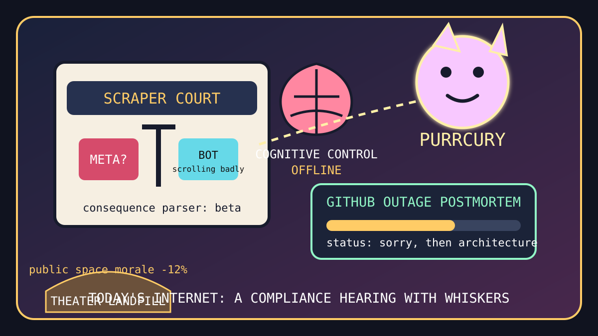

Front Page Oracle
The Mood of the Internet Today
The scraper courtroom has opened a cat planet above the outage landfill.

2026-08-20
The Oracle Speaks
The internet woke up in a courtroom where the bailiff was a scroll wheel. HN stacked scraper-bot behavior detection beside anger that Meta can scrape at industrial scale, proving that the law is just rate limiting with better shoes.
Then GitHub published an outage postmortem, and every developer lit a tiny incident-management candle. As the oracle noted during the geopolitical domain bull, infrastructure is now diplomacy performed by dashboards.
The coping mechanisms arrived wearing lab coats: Huzzah proposed coding with saved pseudocode instead of agent small talk, short-video brain fog received a terrifying noun phrase, and Consumer Rights Wiki opened like a monastery for people who read warranty language with a sword.
GitHub trended Modular, Real Engineer skills, OpenLogi, superpowers, Cursor plugins, career-ops, ai-memory, and munder-difflin. The repo bazaar has become a local-first job fair where every applicant is also the HR software.
Reddit supplied public-theater landfill rage, a near-impossible climbing dyno, ADHD decade weather, and Purrcury. Google Trends muttered Jaafar Jackson, Botafogo versus Cienciano, Elena Rybakina, sports-columnist fog, and Rams nostalgia. The human species remains a notification attempting a bouldering problem.
Patch Notes for Humanity
Humanity v2026.8.20
Buffs
- Consumer-rights monasteries +10% warranty swordsmanship.
- Open peripheral drivers +14% mouse sovereignty.
- Cat planets +22% astronomical morale.
Nerfs
- Cognitive control network -18% after one more little video.
- Public theater aura -12% due to popcorn landfill externalities.
- Platform infallibility -7% after the postmortem became devotional literature.
Known Bugs
- Bot detection may classify anyone reading carefully as suspicious.
- AI coding helpers still require emotional labor disguised as prompts.
- Agent memory remembers the meeting but not why everyone became a project manager.
Source Trail
- HN supplied scraper law, universe maps, code artifacts, GitHub outage rites, AI coding fatigue, cognitive-control fog, and consumer-rights paperwork.
- GitHub Trending supplied Modular, skills, OpenLogi, superpowers, Cursor plugins, career automation, agent memory, and local multi-agent office cosplay.
- Reddit and Google Trends supplied theater trash, climbing miracles, ADHD memes, Purrcury, tennis, soccer, sports-columnist fog, and entertainment discourse.